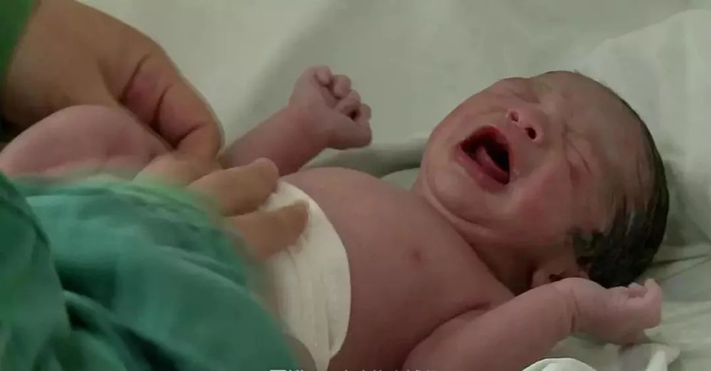
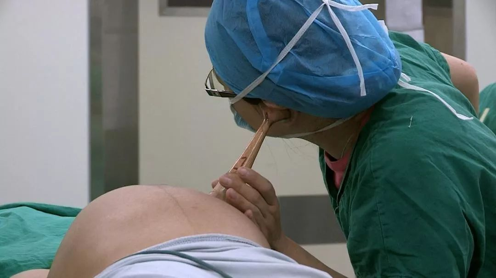
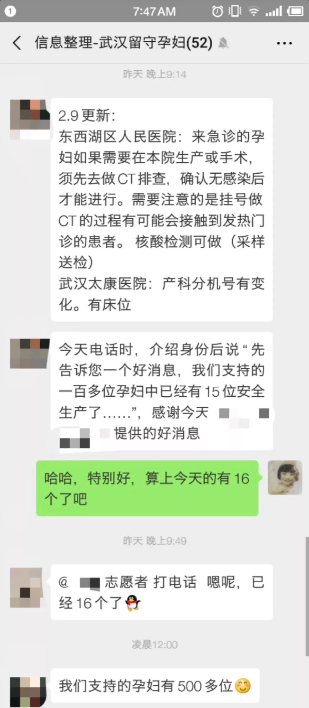

封面报道之一|现场篇：武汉围城
原文链接 备份链接 1月23日凌晨2点“交通封城”令公布时，张奇还在刷手机。 张奇是北京人。1月20日，他坐高铁到武汉来探望朋友。此前媒体已经零星有了关于武汉新冠肺炎的报道，而病例数据在20日急速增加了2倍，危重患者已经有44人。不 …

在诸多志愿者和热心网友的帮助下，感染新型冠状病毒肺炎的小飞妻子在武汉协和西院顺利生产，母子平安。
文 | 高逸佳 冯洁 陈星萌 编辑 | 小豆
2月1日19时13分，小飞更新微博动态：“顺产7.1斤胖小伙一个、孕妇状态很好。感谢各位关注和转发。”在诸多志愿者和热心网友的帮助下，小飞的妻子在武汉协和西院顺利生产，母子平安。目前，已经确诊感染新型冠状病毒肺炎的小飞和妻子在医院接受治疗，孩子出生后就与他们隔离。2月4日婴儿的核酸测试为阴性，转到了普通病房。
1月29日，小飞发布了一条求助微博，引起大量网友的关注。

妻子出现感染症状后，小飞多方联系医院与各种相关部门，找社区求助、呼叫120，将妻子送到武汉市中心医院后湖院区。但因为不满足为感染产妇接生的条件，医院没能对她进行接收。
在诸多志愿者的帮助下，1月31日早上，小飞联系上华中科技大学附属协和西院，医院虽然仍未彻底完成对感染新冠病毒的孕妇的产房准备，但还是接收了他们，并帮助小飞的妻子自然生产成功。

在湖北，越来越多的新生命顺利降生——1月24日，武汉疑似感染孕妇顺利娩下6斤2两的男婴，术后回到感染病房继续治疗；1月29日，湖北黄石首例确诊产妇成功剖腹产下一名5斤多的女婴，母女已于2月7日顺利出院；2月4日，湖北籍孕妇在隔离期内顺利产子，母子平安……
面对着感染的风险、紧张的床位、被迫停下的产检、艰难的求医……疫区的孕产妇与医生和志愿者们一起撑起了一道“生门”。
孕妇心声：找一个最安全的地方生
2月预产期对于准妈妈们来说，本意味着孩子可以在春天的陪伴下降生，意味着一个聪明伶俐的水瓶座宝宝，或是一个善良可爱的双鱼座宝宝。但随着疫情的爆发，处于孕晚期的武汉孕妇集体陷入了焦虑不安。
“现在，去医院产检可能比不做产检的危险要更大一些。”孕期28周的小圆子搁置了她预定的产检计划。在早期产检时，她被检查出有前置胎盘的可能性，但只有到怀孕七个月的时候才可以做B超确认，本该这一周去武汉协和医院做产检的她，考虑到医院收治了大批患新冠肺炎的病人，决定取消这个计划。“护士告诉我，孕妇在病毒面前的抵抗力几乎为零。”小圆子说。
家里人照顾非常周到，也没有家人被感染，环境相对安全。但是前置胎盘孕妇在孕晚期存在大出血的风险，小圆子也担心如果在家里出现这种状况，去医院的话不知道能否快速找到，并且住进医院？“医院如果没有床位不收，我是不是得到处跑（去找医院）？”
大部分武汉孕妇都和小圆子有着同样的担心。一些关键产检不能做，在没有专家指导的情况下，如何自己判断出现的各种问题？如果有紧急情况需要去医院，能不能找到有条件收治的医院？
怀孕37周的孕妇小影本来准备在武汉的大医院进行剖腹产。因为是二胎，胎儿又是“臀位”，“臀位就是胎儿的头在上面，很可能难产”。但现在的形势让她根本不敢出门。“我现在迫切想知道到哪里生安全。我必须找一个最安全的地方生。”小影说。
难解的孕妇“求医循环”
根据武汉市统计局公布的数据，2018年武汉全市增加106610名新生儿。一年10万新生人口，意味着在武汉这座大城市，平均每个月就有近9000个婴儿出生。

纪录片《生门》中的场景。
目前武汉市规模比较大的三甲综合医院，比如协和医院、同济医院、中南医院、人民医院等，都是收治新冠肺炎患者的定点医院，也是平日里接收孕产妇相对比较多的医院。一些预产期临近的孕妇害怕感染，纷纷转向省妇幼保健院这样的专科医院，或者私立妇产医院。
这些专科医院和私立妇产医院大多没有收治新冠病毒感染者，但相对于综合性医院，这些妇产医院的防护措施更少，接收的孕妇却更多，这导致医院收治孕妇前的检查也更为严格。
小圆子说：“我认识的一个朋友，预产期2月份，她去了一家没有收治肺炎病人的私立医院预约生产。但是医院明确要求必须提供证明，证明自己经过检测没有感染新冠病毒才能收。”
然而，对于孕妇来说，去不去开这个证明心里很矛盾。一方面，去综合性医院做检测，就面临感染新冠病毒的风险。另一方面，普通医院用来检测新冠病毒感染的肺部CT检测，会产生对孕妇和胎儿有害的射线。因此，孕妇只能选择去有核酸检测试剂盒的医院做检测。
截至2月8日，武汉市已有14家医院可以进行核酸检测，但由于检测试剂数量有限，大多不可以让孕妇优先检测。一些可以进行核酸检测的医院为减少排队人数，要求疑似病人先去社区医院检查，确认疑似后再携带报告来医院做核酸检测。如此一来，为了拿到证明，孕妇们需辗转几个医院进行检测，被感染的风险大大提高。

纪录片《生门》中的场景。
而对于那些已经出现感染症状的孕妇来说，在医院生产与治疗更是成为一个难以解开的“求医循环”。
根据武汉市新冠肺炎防控指挥部医疗救治组1月28日发布的《关于做好新冠肺炎疫情期间特殊病人医疗保障工作的通知》（下称《通知》），华中科技大学附属同济医院中法新城院区、华中科技大学附属协和医院西院、湖北省人民医院东院区和武汉市中心医院后湖院区是为确诊或疑似感染的孕产妇进行保健、手术的定点医院。
小飞的妻子告诉南都周刊，一般普通发热定点医院，只接收发热的普通的病人，不接收发热孕妇。她当时询问了几家普通发热定点医院，都没有被接收。
无奈之下，1月30日，小飞根据《通知》给出的定点医院名单，求助古田社区工作人员联系120救护车，带着妻子前往武汉市中心医院后湖院区。
然而，后湖医院的医护人员对小飞说，他们现在还在对发热病人进行转移，床位没有安排好，只能对孕妇进行简单的抽血和拍片孕检，没有接生的条件。同样的情况也出现在其他三家定点接收发热孕妇的医院中。这些医院必须把其他病人腾出并且改造病房，使病房满足接收发热孕妇的条件，才能够确认接收和接生。
在2月7日核实确认的信息中，《通知》指定的四家孕产妇定点医院里，华中科技大学附属同济医院中法新城院区可以接收治疗确诊的发热孕妇，但目前床位已满，该医院不能对疑似患者进行核酸检测，也不可以进行孕妇的产检和接生；武汉市中心医院后湖院区可以接收发热孕妇，目前床位已满，疑似孕妇住院后可以排队进行核酸检测，不可以进行孕妇产检和接生，核酸检测也有很多人排队。华中科技大学协和医院（本院）接收发热孕妇，要求孕妇前往发热门诊筛查后，视情况决定是否接收。
在非官方指定的医院中，武汉湖北六七二中西医结合骨科医院、黄陂区人民医院、江夏区人民医院与武汉大学中南医院确认接收发热孕妇。但六七二中西医结合骨科医院只接收已经确诊的孕妇，仅中南医院和黄陂区人民医院可以为疑似孕妇进行核酸检测。
“现在的情况就是如果孕妇不能确诊感染的话，就很难进定点医院做治疗，但是如果让孕妇到其他医院排队检测的话又很危险，因为孕妇的抵抗力低。”小飞的妻子说。
互助支撑的高危孕妇们
公共医疗资源紧张，疫情仍在肆虐，在通往顺利生产的路上，每个被困在武汉的孕妇都面临着巨大的不确定性。而对于流产率极高的高危孕妇来说，新冠病毒带来的影响更是普通人难以想象的。
高危孕妇，是指反复的以流产、胎停为妊娠的结局的孕妇群体。小新是一名武汉的高危孕妇，她上一次怀孕在27周时出现胎停，检查之后，被确诊为非典型的抗磷脂综合症。
“在武汉，有一些孕妇和我一样，在怀孕这件事情上很艰难，一路走的都很艰难。像我们这样的人，再次怀孕后，需要每周或每两周去产检一次，查各项指标，然后调整用药。”
小新这一次怀孕，从刚怀上就开始注射低分子肝素保胎，一天两针，同时还需要口服阿司匹林、优甲乐等其他药物。这些高危孕妇使用的保胎药基本都是处方药，必须去医院找医生开药后再从医院拿。

小新皮肤上长期注射保胎针留下的淤青。
现在，湖北省妇幼保健院已经关闭了小新之前做保胎的科室。从怀孕第19周起，小新就再没有去过医院，至今已有半个多月。封城之前，她囤了一些低分子肝素，够用十几天，但这之后怎么办？“现在就算去医院，因为科室停诊，我也没办法把药开出来。”
小新加入了一个武汉高危孕妇建立的微信群。群里，每个人都很焦虑迷茫。一些情况类似的孕妇，已经将原本一天两次低分子肝素的注射量，改为一天一针，甚至隔天一针。但减少药量是否会导致胎停，甚至给自己带来危险，她们也很担心。
疫情发生后，小新在家哭了很多次。她不停地在网上翻查相关新闻，睡眠也变得非常差。“每天都是凌晨两点才睡着，夜里还做噩梦。”
焦虑不安的孕妇们在群里互相交流保胎经验，互相打气，尽可能的互相帮助。在微博上看到武汉有被感染的孕妇求助，她们就会在微博上帮她们呼救，帮她们联系可以接收的医院、拨打市长热线。遇到情况很紧急的孕妇，她们还会送出二甲双胍，芬吗通雌二醇和地屈孕酮这样的保胎药物。
志愿者建立的“湖北孕妇咨询群”和“武汉留守孕妈群”
幸运的是，有很多志愿者和医生组织正在通过多种方式，帮助武汉孕妇解决困难。贵州省遵义市妇幼保健院生殖医学科的韩磊医生建立了12个湖北孕妇咨询群，组织20-30名医生每天在线上对湖北省的孕妇们提出的问题进行回答。

湖北的孕产妇可关注公众号“遵医道 行仁义”咨询加群事宜。
韩磊说：“在疫情期间，既不能草木皆兵，遇到什么问题都去医院，也不能讳疾忌医，出了很多问题也不去产检。因为过度医疗会浪费医疗资源，增加传染风险，而漏诊是更要不得的，可能危及母儿生命健康。为了尽快及时解决这个突出的矛盾，我们组建了湖北孕妇咨询群。”
“我在第一时间利用我们现有的同行学术交流群，在群里发布公告，希望更多的同行加入，因为这需要大量的医生。”韩磊说，现在每天群里都有更多的志愿者加入，这些志愿者来自全国的妇产科同行，有医生、护士也有助产士。
另外一群自发汇集的专业志愿者组成的“nCoV支援行动”，希望帮助武汉及周边疫区居家隔离的新冠肺炎（疑似）患者及家属。其中，“nCoV～武汉留守孕妈群”，是这一行动中专门负责帮助有需要的孕妇联系医院和相关机构的小组。

湖北的孕产妇可关注微博账号@nCoV支援 咨询加群事宜。
“nCoV支援～武汉留守孕妈群”的负责人表示，已经有很多武汉的普通孕妇在私立医院或者专科医院成功生产，也有和小飞妻子一样的感染孕妇得到了帮助。小组志愿者每两天整理一次医院信息，他们每天都收到大量的求助，也在通过各种渠道帮助武汉孕妇解决困难。
现在，nCoV志愿者们已经筹集并寄送了一批必需的药品给有需要的高危孕妇。小新也在强迫自己有规律地生活作息，让自己放松下来：“大家一起互相加油打气，说武汉一定会好的，咱们一定可以战胜这个病毒的。”
“等疫情过后，欢迎大家都来武汉玩儿，吃热干面，吃鸭脖子。”小圆子笑着说。
截止2月8日，南都周刊通过电话联系，确认武汉市有44家医院接收普通孕妇，有35家医院可以为普通孕妇接生，5家医院接收发热孕妇，其中3家医院确定可以为发热孕妇接生。同时，武汉市卫健委也于近期公布了44家助产机构名单，满足众多孕妇的产检、分娩需求。
（应被采访者要求，文中人物皆为化名。）
附：
44家助产机构名单

（来源：长江日报）
点击下方链接可以获取最新确认的武汉医院信息（来源：凤凰网）
来源｜南都周刊
END
欢迎分享到朋友圈，如想取得授权请邮件：newmedia@nbweekly.com。如果想找到小南，可以在后台回复「小南」试试看哦~

原文链接 备份链接 1月23日凌晨2点“交通封城”令公布时，张奇还在刷手机。 张奇是北京人。1月20日，他坐高铁到武汉来探望朋友。此前媒体已经零星有了关于武汉新冠肺炎的报道，而病例数据在20日急速增加了2倍，危重患者已经有44人。不 …
原文链接 备份链接 杨普（化名）是湖北的一名民警，他所在的县级市距离武汉约50公里，有百万人口。在疫情尚未明朗前，当地曾有大量居民往返武汉，包括从武汉返乡过年的打工者。 当疫情爆发点和重灾区被锁定在武汉后，大量目光也随之被吸引而去。一旁的 …
原文链接 备份链接 ********** *****从地图上看，鄂州被武汉、黄冈、黄石“包围”，它的面积只有1594平方公里，是湖北省面积最小的地级市，但因武汉、黄冈是湖北疫情最为严重的两个地区，鄂州的疫情也比较严峻。***** 2月8 …
原文链接 备份链接 编者按：这是一对父子。父亲赵华明是铁路上海客运段京沪车队的列车长。17年前非典时期，他跑1461/1462次京沪绿皮车。今年新型冠状病毒疫情之际，他仍出乘，跑临客，去重庆。与17年前不同的是，当年在读小学的儿子赵程，如 …
原文链接 备份链接 记者/ 魏晓涵 梁婷 韩谦 佟晓宇 实习记者/ 陈威敬 胡琪琛 编辑/杨宝璐 宋建华 医护人员严阵以待 摄影/高瞾 2019年12月30日，武汉市卫计委内部文件流出，称“武汉出现不明原因的肺炎”，与华南海鲜批发市场有 …